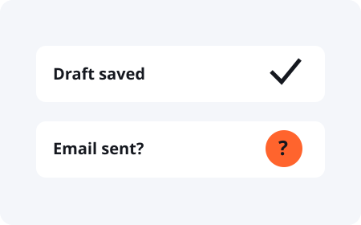

Completion / Practical AI Safety
“Done” needs
something you can check.
Find the result in the system where it was supposed to happen.
Ask what changed, where it changed, and what evidence confirms it. Match the evidence to your actual request. A saved file proves a file was saved. It does not prove that someone received it or that its contents are right.
Fictional practice case

A task has more than one state.
You asked for a report to be emailed to a test recipient. The assistant created the report and saved an email draft. It then reported the whole task complete.
See the accurate status
The report and email draft are saved. Sending has not been verified. Review the report and recipient before approving the send.
What counts as evidence?
Use evidence from the relevant system. Open a saved file and inspect its contents. For a published page, visit the intended public URL without relying on an editor preview. For an email, check the provider's record and the recipient. A send record does not prove someone read the message.
What if the evidence is missing?
Keep the status unverified. Check the destination before repeating an action that might already have happened. Retrying an uncertain send or payment can create a duplicate.
How should my assistant report progress?
Ask it to distinguish prepared, approved, performed, and verified work. Ask for the evidence and any remaining action. These labels are useful only when they match records you can inspect.
A completion report to ask for
“State what changed and where. Link the evidence. Say what that evidence proves and what it does not prove. Name anything still unverified. Do not call the whole task complete if a requested part remains undone.”
Keep the next check clear
Use the action-and-proof worksheet before the task. Decide what evidence will count so you do not have to invent a definition of done afterward.
This is a teaching method for reviewing task evidence. It is not an automatic audit of your assistant. For implementation guidance, see OWASP: AI agent security.